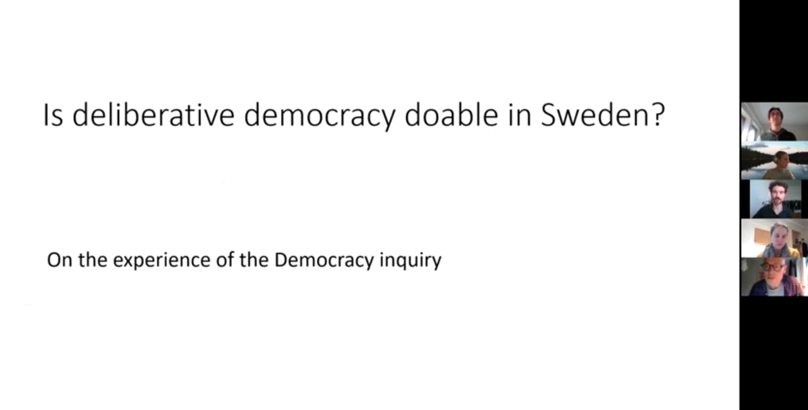

Seminar 03
Nov 10, 2021
Keywords:
Deliberative Democracy, Political (Dis)trust, Local Experimentation, Power Distribution
Highlights:
Summary:
In the third seminar of the REFoCUs seminar series, Daniel Lindvall shared his insights on the nature and recent evolution of democracy in Sweden, and the possibilities for experiments with deliberative democracy. Daniel traced the recent history of participatory democracy and three democracy inquiries, one of which he led in 2014. In general Sweden is fairly conservative with regards to democratic innovations for a number of reasons and the perception that there is not much distance between elected representatives and citizens. Another point that Daniel shared is that power in Sweden is very centralized with local government politicians having the most and citizens having the lowest power. Following recommendations particularly from the democracy inquiry in 2000, participatory experiments were initiated in local planning questions. These were not very successful in general because open dialogues attracted a self selecting group which exacerbated political inequality. Another reason is that many decisions were already taken before the citizen dialogue, which led to distrust among citizens. Daniel outlined guidelines from his recent democracy inquiry that participatory democracy initiatives need to have a formal process with clear rules, all voices need to be heard, the objectives need to be clear, and results need to be shared and communicated after the deliberation.
The discussion brought up that on a local level there are very harsh conflicts around e.g. school closures, wind farms etc and no tools are currently being used to bring in a full range of views and resolve these harsh conflicts. Municipalities struggling with these conflicts are more open to democratic innovations and experimentation with mini-publics on a local level could provide some answers to these challenges. Another point that came up in the discussion is that the context and focus of conflicts and decision-making varies between the national and the local level. On a local level there are more concrete and practical discussions by concerned people, whereas on a national level debates are more general and theoretical, and ideology plays a larger role.
Further References: